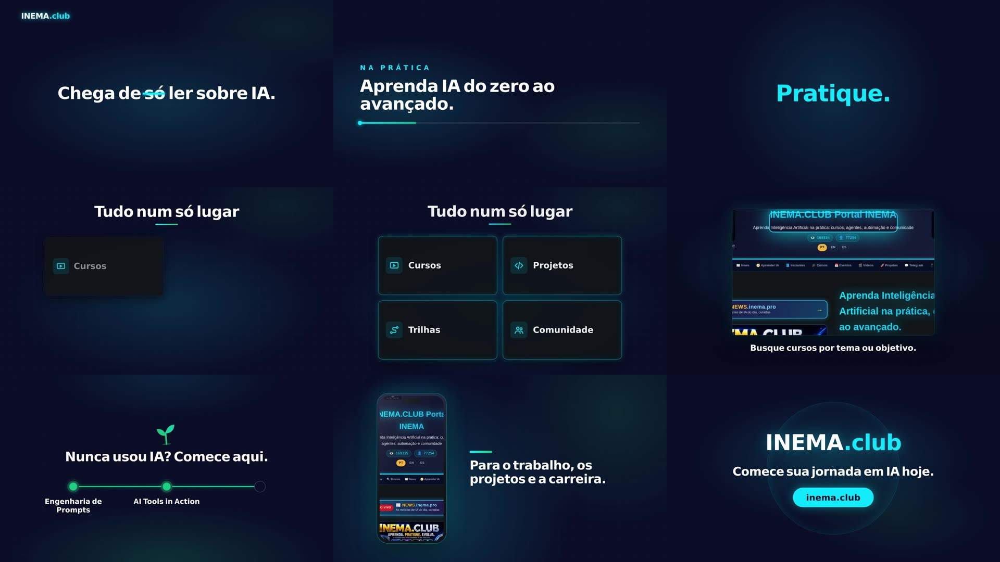
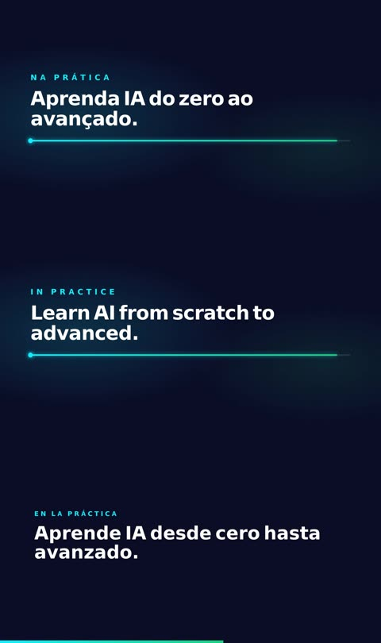

Point it at a URL. filmarca reads the site's colors, fonts, logo, text and screenshots, writes the script, animates the scenes and delivers the MP4 in 16:9, 9:16 and 1:1, in Portuguese, English and Spanish.
A command-line tool that turns a website into a brand presentation video. The AI writes the script and the code for each scene; filmarca checks every scene before accepting it and renders everything locally with HyperFrames.
Uses the AI from your subscription: Claude Code (claude -p) or Codex (codex exec) already logged in on your machine. No key is read or sent.
Each AI scene is checked in the browser in all three formats: no network, no clock, no text outside the frame, no split words. If it fails, the AI fixes it once; if it fails again, a template scene is used.
The same scene code works in 16:9, 9:16 and 1:1 (frame-relative measurements). Text lives outside the code, so translating to EN/ES swaps only the sentences.
Each step writes files to the film folder (marca.json, roteiro.json, cenas/, renders/), so you can redo just one of them.
Playwright's Chromium opens the site and measures: background, text and button colors, font families (downloads the files), logo, headings, paragraphs, numbers, and takes screenshots of the top, three bands and the mobile version. With no image logo, it generates a text wordmark.
The director writes the concept and the scenes (opening, title, number, screenshot, list, free, call to action) using only facts from the site. Then each scene becomes HTML + CSS + GSAP, written by the AI following a strict contract.
Each scene runs on its own in the browser in all three formats. Once approved, they become one HyperFrames composition per language and format, pass hyperframes lint and come out as MP4.
Linux, macOS or Windows (WSL). The first run downloads Playwright's Chromium.
HyperFrames requires Node 22 or newer and FFmpeg on your PATH.
node -v # v22 or newer ffmpeg -version
The AI runs through your subscription. Either one working in the terminal is enough.
claude -p "say ok" # or codex exec "say ok"
Clone, install and download the browser once.
git clone https://github.com/inematds/filmarca cd filmarca && npm i npx playwright install chromium
All commands run from inside the filmarca folder. Without --out, the film goes to ~/projetos/output/filmarca/<site>-<data>.
One command does it all. --rascunho renders fast so you can review; it takes about 3 minutes for a 30 s film.
node bin/filmarca.mjs fazer https://seusite.com --out ~/filmes/seusite --duracao 30 --rascunho # 1/4 DNA da marca → 2/4 roteiro → 3/4 cenas (c1 ✓ aprovada …) → 4/4 render
--pedido guides the director (audience, emphasis, tone). --motor codex uses Codex instead of Claude.
node bin/filmarca.mjs fazer https://seusite.com --pedido "annual plan launch, for people who already know the brand" --motor codex
Open revisao.html in the film folder: each scene appears in 16:9 and 9:16, with its text, direction, version, and whether it was written by the AI or is a template scene.
xdg-open ~/filmes/seusite/revisao.html # on macOS: open
The change goes through the same checks. Each version is saved in cenas/c3.vN.json.
node bin/filmarca.mjs editar ~/filmes/seusite c3 "the number counts up as it appears and a ring closes around it" node bin/filmarca.mjs voltar ~/filmes/seusite c3 1 # go back to version 1
Only the text is translated; the scene code is the same. At render time, each scene is checked again in that language (a longer sentence can't overflow the frame).
node bin/filmarca.mjs traduzir ~/filmes/seusite --lang en node bin/filmarca.mjs traduzir ~/filmes/seusite --lang es
Without --rascunho you get HyperFrames' normal quality. --trilha lays a music track (MP3/WAV) under the whole film.
node bin/filmarca.mjs render ~/filmes/seusite --langs pt,en,es --trilha musica.mp3 # renders/<titulo>-pt-16x9.mp4, -pt-9x16.mp4, -pt-1x1.mp4, … (9 files)
By default the director and scenes use the "top" model and translation the "smallest", read from ~/.config/inema/modelos.env when it exists. To force one model for everything:
FILMARCA_MODELO=sonnet node bin/filmarca.mjs cenas ~/filmes/seusite --so c2,c5
Nothing here was animated by hand: filmarca read inema.club, the AI wrote the 8 scenes and all of them passed the checks. Total draft time: 2.7 minutes.


The method (read the site's design, write a script and animate scene by scene with checks) was inspired by the Motive project. Since it has no license, filmarca was written from scratch, with different choices:
| filmarca | |
|---|---|
| AI | subscription (Claude Code or Codex), no key |
| Render | HyperFrames (HTML + GSAP), no commercial license |
| Checks | browser in 3 formats + HyperFrames lint |
| Languages | PT, EN and ES from the same scene code |
| License | MIT |
Version 0.1 is the complete command line. The next steps are open.
hyperframes tts), with scene duration following the speech.